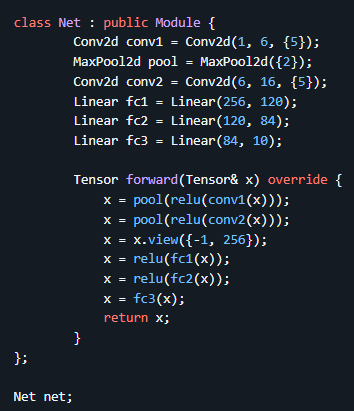
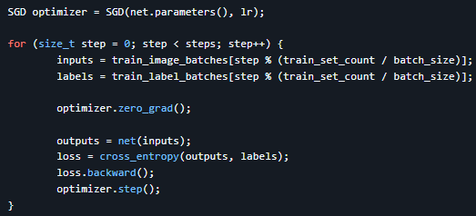

Summary
Recent Computer Science graduate from CSUSM (May 2025) with expertise in AI/ML. Created a custom deep learning framework similar to PyTorch from scratch in C++, and recreated and trained transformers like OpenAI's Whisper and Google's BERT. Experience using cuBLAS and CUDA for efficient GPU-accelerated matrix operations. Collaborated with six different teams on course projects including a desktop app, a mobile app, deploying Llama on various cloud platforms, and a facial expression classifier, to name a few. Currently working on a full-stack AI fitness tracker web app.
Skills
Programming Languages: Python, C++.
Machine Learning
& AI: Deep Learning, Transformers, Sequence-to-Sequence, Audio
Transcription, Computer Vision.
Frameworks & Libraries:
PyTorch, TensorFlow, Hugging Face Transformers/Datasets.
High-Performance Computing & Parallelism: GPU-accelerated
model training (A100, H100), CUDA, cuBLAS, DDP.
Cloud
Computing: Amazon Web Services, Google Cloud Platform, Lambda
Labs.
Software Development: Git, Data Structures &
Algorithms, SQL, HTML/CSS, Multiprocessing, OS Fundamentals,
Networking Basics.
Education
California State University San Marcos (CSUSM)
Bachelor of
Science in Computer Science
Graduated: 5/17/2025
Relevant Coursework: Intro to Deep Learning, Intro to AI,
Intro to Machine Learning, Intro to Data Science, Cloud Computing,
Software Engineering, Data Structures and Algorithms, Programming
Languages, C++/Object-Oriented Programming, Computer Architecture,
Operating Systems, Database Systems, Intro to SQL, Intro to
Networking.
Extracurricular: AI Club, Robotics Club,
LeetCode Club.
Projects
AI Fitness Tracker (in progress):
- A full-stack web app that leverages AI to generate personalized insights from users' diet, exercise, sleep, and mood data.
- Utilizes Retrieval-Augmented Generation (RAG) with API calls to ChatGPT, which acts as an intelligent agent that synthesizes insights by analyzing users' historical and current health data along with prior AI-generated feedback.
- PostgreSQL on Amazon RDS will store all health/fitness metrics and memory of past insights.
- Will be built with a FastAPI (Python) backend and a React + TypeScript frontend for responsive, modern UX.
Deep Learning Framework:
- A deep learning framework inspired by PyTorch written in C++/CUDA.
- With a familiar PyTorch-style syntax, you can train efficient neural networks that achieve over 99% test accuracy in just a few lines of C++.
- The framework is optimized for performance and can run entirely on the GPU.
Create a CNN model for classifying handwritten digits from the MNIST dataset, inspired by LeNet-5, similar to this example in PyTorch.
Training is as simple as:
SpeechCommandsBERT:
- A transformer model from scratch for single-word speech classification for the Google Speech Commands dataset using a modified version of Andrej Karpathy's GPT-2 code.
- Trained on an 8x A100 GPU instance from Lambda Labs.
- 95.2% test accuracy when classifying 4,074 new speech recordings from the first 10 command classes.
CookLit:
- AI-powered cooking assistant for Android that generates recipes from ingredient images.
- Collaborated with mentors from Qualcomm to deploy a vision model from the Qualcomm AI Hub on the Snapdragon chip.
- The app uses the CLIP and Llama models to classify ingredients and generate detailed recipes.
- Worked on a team of 4 for about 10 weeks, focusing primarily on the OpenAI CLIP vision model.